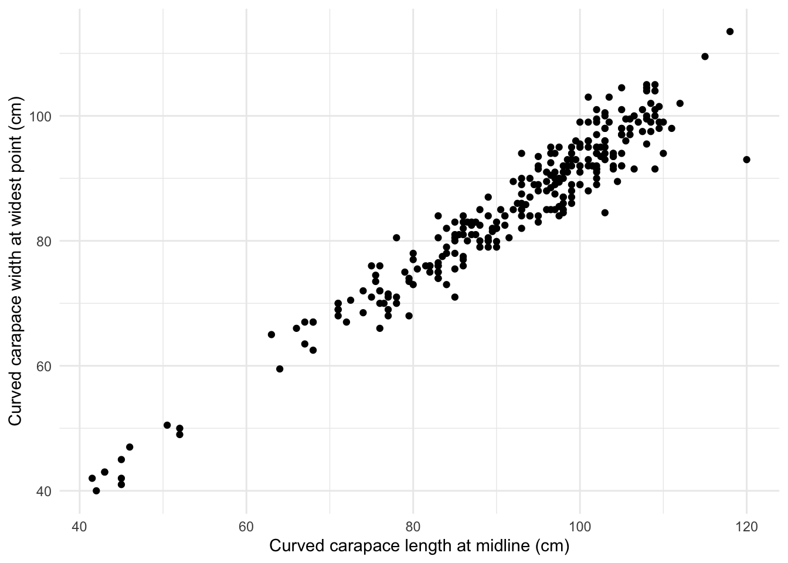
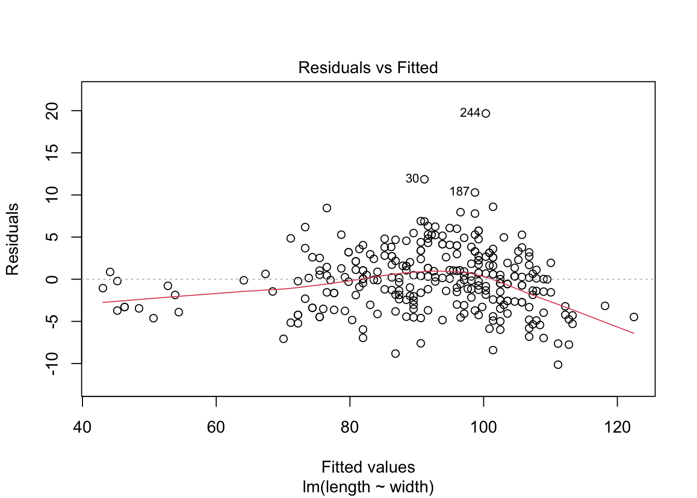
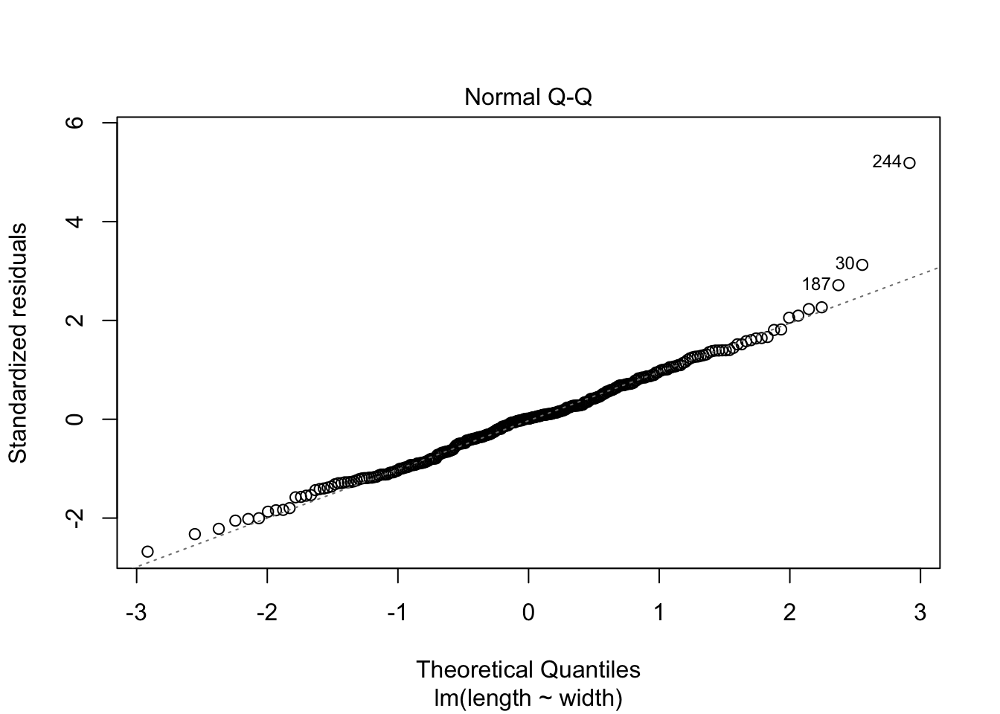
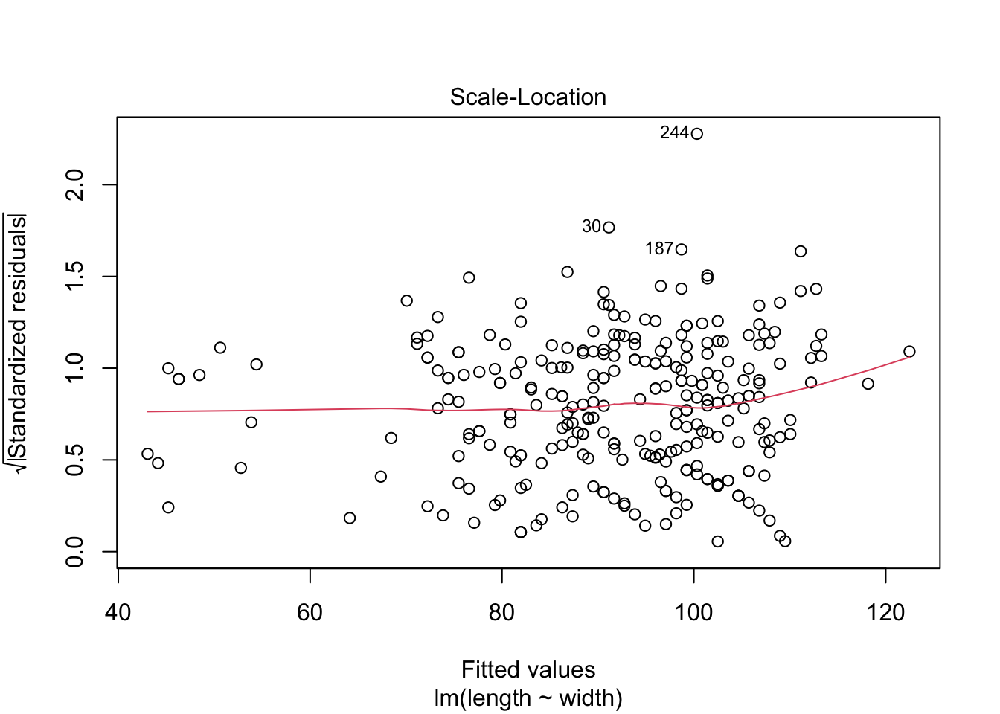
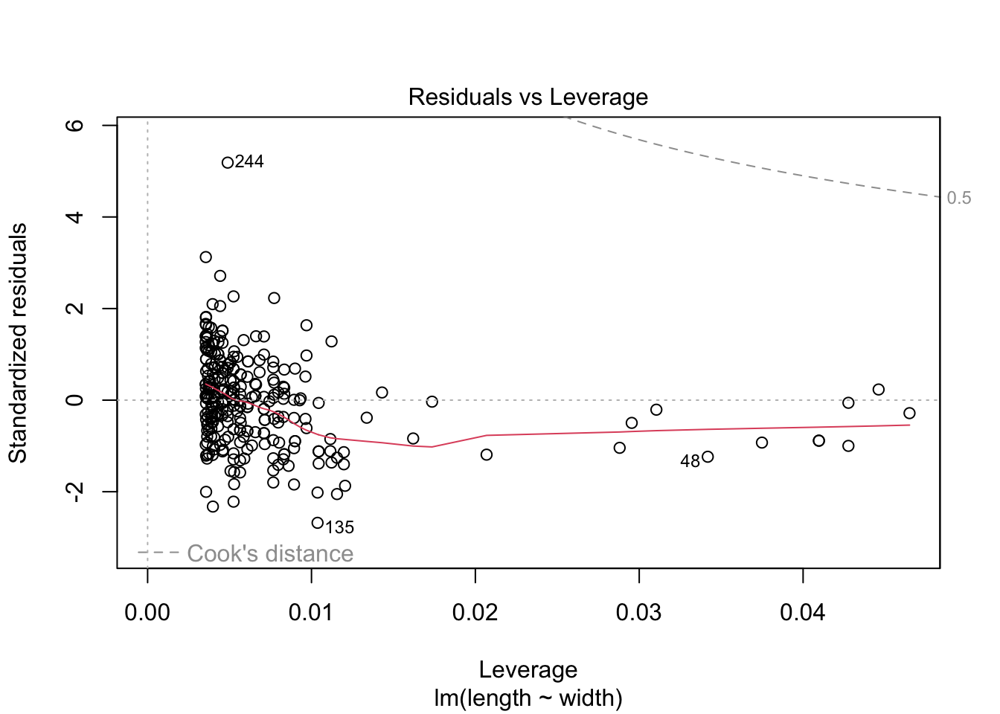
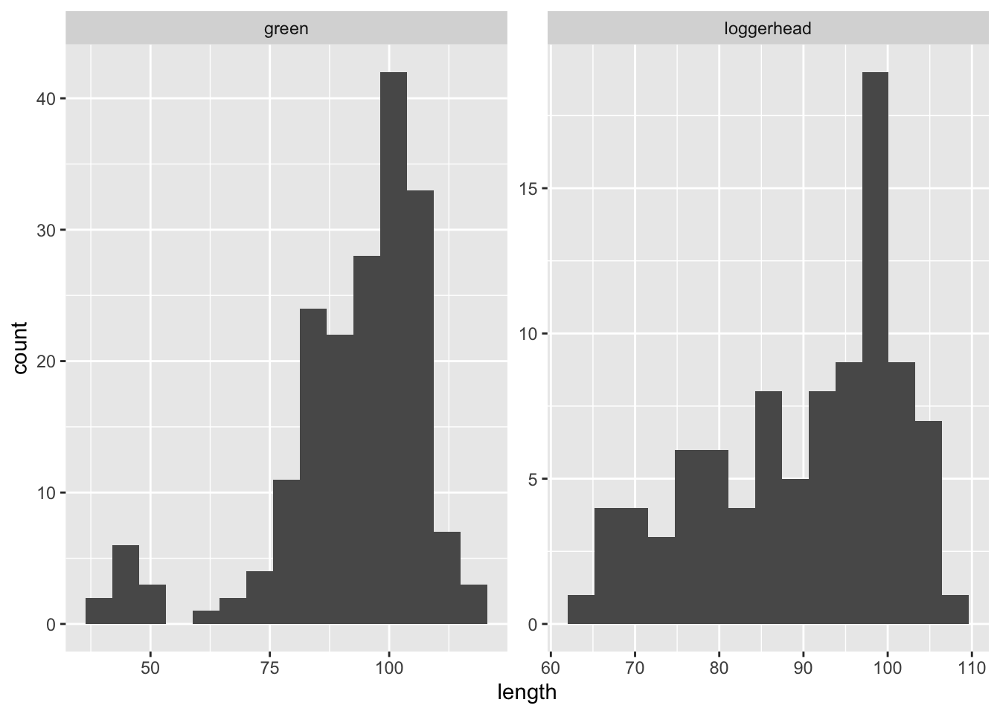

library(tidyverse)
library(here)
library(broom)
library(effsize)
library(janitor)
library(kableExtra)Load Packages:
To access data, html and Rmd files:
- https://github.com/elmeraa/elmera-azadpour-206-final
- you will find the sharkbay sea turtles data in the “exam_data” folder
- you will find the Rmd and html files as “azadpour_turtles” in the “task_code” folder
Read in sea turtles data (source: Environmental Data Initiative)
sea_turtles <- read_csv(here("posts", "2021-03-31-two-sample-t-test", "sharkbay_sea_turtles.csv")) Rows: 283 Columns: 25
── Column specification ────────────────────────────────────────────────────────
Delimiter: ","
chr (16): recap, species, tail_notes, mass_notes, left_tag, notes, chel, bur...
dbl (9): latitude, longitude, length, width, tail, mass, right_tag, shark_d...
ℹ Use `spec()` to retrieve the full column specification for this data.
ℹ Specify the column types or set `show_col_types = FALSE` to quiet this message.sea_turtles_clean <- sea_turtles %>%
dplyr::select(species, length, width, burr)Exploratory visualization
ggplot(sea_turtles_clean, aes(x = length,
y= width)) +
geom_point() +
theme_minimal()+
labs(x ="Curved carapace length at midline (cm)",
y = "Curved carapace width at widest point (cm)")Warning: Removed 1 rows containing missing values (geom_point).
Linear Regression
## linear regression
turtles_lm <- lm(length ~ width, data = sea_turtles_clean)
# Return the complete overview:
summary(turtles_lm)
Call:
lm(formula = length ~ width, data = sea_turtles_clean)
Residuals:
Min 1Q Median 3Q Max
-10.1332 -2.6294 0.0433 2.4164 19.6729
Coefficients:
Estimate Std. Error t value Pr(>|t|)
(Intercept) -0.16968 1.50479 -0.113 0.91
width 1.08061 0.01749 61.775 <2e-16 ***
---
Signif. codes: 0 '***' 0.001 '**' 0.01 '*' 0.05 '.' 0.1 ' ' 1
Residual standard error: 3.802 on 280 degrees of freedom
(1 observation deleted due to missingness)
Multiple R-squared: 0.9316, Adjusted R-squared: 0.9314
F-statistic: 3816 on 1 and 280 DF, p-value: < 2.2e-16# We can use the broom::tidy() function to get the model outputs in nice data frame format:
turtles_lm_tidy <- broom::tidy(turtles_lm)
# Get the intercept:
turtles_int <- turtles_lm_tidy$estimate[1]
turtles_int[1] -0.1696804# Then to get the flipper_length coefficient:
turtles_coef <- turtles_lm_tidy$estimate[2]
turtles_coef[1] 1.080611#What about getting some other model information (degrees of freedom, F-statistic, p-value, etc.)?
#Many of these statistical outcomes can be accessed more easily using broom::glance().
# Metrics at a glance:
turtles_lm_out <- broom::glance(turtles_lm)
turtles_lm_out# A tibble: 1 × 12
r.squared adj.r.squ…¹ sigma stati…² p.value df logLik AIC BIC devia…³
<dbl> <dbl> <dbl> <dbl> <dbl> <dbl> <dbl> <dbl> <dbl> <dbl>
1 0.932 0.931 3.80 3816. 3.66e-165 1 -776. 1558. 1568. 4048.
# … with 2 more variables: df.residual <int>, nobs <int>, and abbreviated
# variable names ¹adj.r.squared, ²statistic, ³deviance
# ℹ Use `colnames()` to see all variable names# Explore model assumptions
plot(turtles_lm)



# Pearson’s r
turtles_cor <- cor.test(sea_turtles_clean$length, sea_turtles_clean$width)
turtles_cor
Pearson's product-moment correlation
data: sea_turtles_clean$length and sea_turtles_clean$width
t = 61.775, df = 280, p-value < 2.2e-16
alternative hypothesis: true correlation is not equal to 0
95 percent confidence interval:
0.9562175 0.9723919
sample estimates:
cor
0.9652165 Regression summary of sea turtle curved carapace length and width at midline (cm).
- Simple linear regression was used to explore the relationship between sea turtles curved carapace length at midline (cm) and curved carapace width at widest point (cm) across two sea turtle species: green or loggerhead. A significant regression model was found (\(\beta\) = 1.081, F(1,280) = 3816.1, p < 0.001) with an R2 of 0.932.
Comparing carapace lengths between green and loggerhead turtles
## Lets just look at the raw data
#ggplot(data = sea_turtles_clean, aes(x = species, y = length)) + geom_boxplot(aes(col=species))
# not very different..
# Histograms
ggplot(data = sea_turtles_clean, aes(x = length)) +
geom_histogram(bins = 15) +
facet_wrap(~species, scales = "free")Warning: Removed 1 rows containing non-finite values (stat_bin).
# QQ Plots
ggplot(data= sea_turtles_clean, aes(sample = length)) +
geom_qq() +
facet_wrap(~species)Warning: Removed 1 rows containing non-finite values (stat_qq).
Two sample t-test
# two sample t-test
turtle_length_green <- sea_turtles_clean %>%
dplyr::select(c("length", "species")) %>%
filter(species == "green") %>%
pull(length)
turtle_length_loggerhead<- sea_turtles_clean %>%
dplyr::select(c("length", "species")) %>%
filter(species == "loggerhead") %>%
pull(length)
ttest <-t.test(turtle_length_green, turtle_length_loggerhead)
ttest_tidy <- tidy(ttest)
#turtles_clean_table <- sea_turtles_clean %>%
#group_by(species) %>%
#summarise(mean_length = mean(length, na.rm=T),
#sd_length = sd(length, na.rm=T),
#n = n())
# cohens d/ effect size
cohen_test <- cohen.d(turtle_length_green, turtle_length_loggerhead, na.rm = TRUE)Two sample t-test conclusions:
- I used a two-sample t-test because I wanted to compare differences between 2 groups (turtle species) and compare means (continuous data) of curved carapace lengths.
- This analysis indicates green sea turtles had a larger mean (92.64 ± 15.78, n = 188; mean ± 1 standard deviation), compares to loggerhead sea turtles which had a smaller mean (89.92 ± 11.44, n = 95; mean ± 1 standard deviation). The actual difference in means from green and loggerhead sea turtles is 2.72. The outcome of the two sample t-test indicated that there is somewhat strong chance of (p > 0.001) of randomly selecting two samples from populations with the same that are this difference by change. In sum, the difference in means is significant (Welch’s two-sample t-test: t(244.17) = 1.65, p-value = 9.98e-02) and the effect size is negligible (Cohen’s d = 0.19).
## Finalized table that shows counts and proportions of presence of burrowing barnacles to sea turtle species"
sea_turtles_burr <- sea_turtles_clean %>%
dplyr::select(species, burr)
burr_counts <- sea_turtles_burr %>%
janitor::tabyl(species, burr)
burr_proportions <- burr_counts %>%
adorn_percentages() %>%
janitor::adorn_pct_formatting(digits = 2) %>%
adorn_ns() %>%
drop_na()
burr_ct <- burr_proportions %>%
column_to_rownames(var = "species")
burr_ct %>%
kable(col.names = c("No",
"Yes"),
caption = "**Table 1**: Association between sea turtle species and presence of burrowing barnacles") %>%
kable_styling(full_width = FALSE)| No | Yes | |
|---|---|---|
| green | 87.23% (164) | 12.77% (24) |
| loggerhead | 69.47% (66) | 30.53% (29) |
Chi-square test for independence
## Chi-square test
burr_ct <- burr_counts %>%
drop_na() %>%
column_to_rownames(var = "species")
survey_x2 <- chisq.test(burr_ct)
survey_x2
Pearson's Chi-squared test with Yates' continuity correction
data: burr_ct
X-squared = 11.938, df = 1, p-value = 0.00055survey_tidy <- tidy(survey_x2)Chi-square results and summary
A chi-square test for independence compares two variables in a contingency table to see if they are related. In a more general sense, it tests to see whether distributions of categorical variables differ from each another. For this analysis, there is a significant association (i.e. non-independence) between sea turtle species and and the presence of burrowing barnacles (\(\chi\)2(1) = 11.94, p-value = 5.5e-04).
Sea turtle data source:
- Heithaus, M. and J. Thomson. 2019. Marine turtles captured during haphazard at-sea surveys in Shark Bay, Australia from February 2008 to December 2013 ver 4. Environmental Data Initiative. https://doi.org/10.6073/pasta/7696e20214fbf84f25d664ff7dc8050c